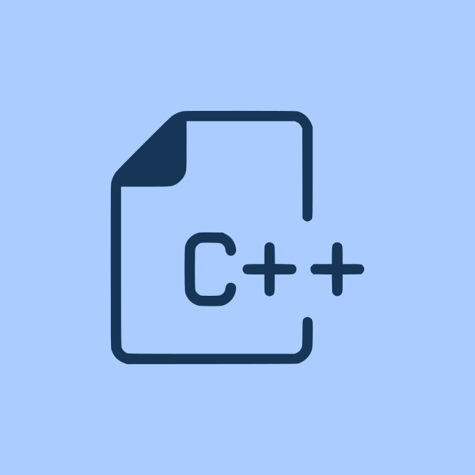
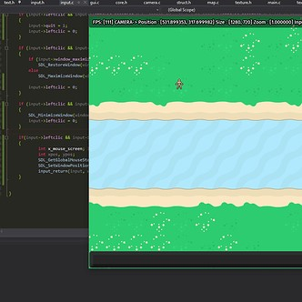

Game using SDL & C++ only


The aim of this project is to improve my C++ skills by creating a game without the facilities that a game framework like Unreal's game framework offers.
To do so I am using C++ and SDL. SDL is Simple DirectMedia Layer. It is a cross-platform development library designed to provide low level access to audio, keyboard, mouse, joystick, and graphics hardware via OpenGL and Direct3D.It can be used to make animations and video games.
This project is still under development because I don't want to skip any important concept from C++. Moreover, I want this game to include some essential features like an ECS, AABB collision, animation system, etc.
View on Git